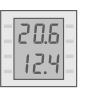

QMX3.P36 device properties
The listed properties are displayed in the Hardware and network editor > Inspector window > Properties tab when the device with KNX PL-Link is selected in the Device view tab.
QMX3.P36 |
 |
General and Catalog information
The General and Catalog Information group provides information about the device.
Property | Description | Default value |
|---|---|---|
Mode | Mode shows the network mode of the device. Read only. | KNX PL-Link |
Name | Name is a text field to enter the name of the device. The name is used to identify the device in the device view. | Depends on other settings. |
Comment | Comment is a free text field to enter any helpful information on the device. | - |
Power consumption | Power consumption shows the power the device consumes. Read only. Unit: [mA] The value is used to calculate the remaining power of the KNX rail. See also power consumption and supply on KNX rail of PXC3 or KNX rail of DXR2. | Depends on the device type. |
Short designation | Short designation shows a short description of the device. Read only. | Depends on the device type. |
Order number | Order number shows the device type. Read only. | Depends on the device type. |
Version | Version shows an internal version of the device. Read only. | - |
Description | Description shows a short description of the device. Read only. | Depends on the device type. |
Device information
The Device information group provides information about the device and settings valid for all channels.
Property | Description | Default value |
|---|---|---|
Device address (KNX) | Device address (KNX) shows the fixed standard address for devices with KNX PL-Link. Read only. | 255 |
Network address (KNX) | Network address (KNX) shows the network address that was assigned based on the device address (KNX). Read only. | 0.2.255 |
Serial number used | Serial number used defines the method used for device identification.
: Device identification has to be done in Web interface. The device has to be in programming mode for Web interface to perform the device identification. | : Device identification has to be done in Web interface. |
Serial number | Serial numberis a text field to enter the serial number used for device identification. Serial number is only enabled and meaningful if Serial number used is enabled. | 000000000000 |
Layout | Layout defines which preloaded page set is used.
|
|
Language | Language defines the language of the selected page set.
|
|
Active unit set | Active unit set defines the unit for the display of the actual temperature and the temperature setpoint.
|
|
Create BACnet object | Each item defines if BACnet object matching the function is created. Every function that is enabled under Functions should be selected.
: No BACnet object is created. |
|
 : The serial number entered in the text field Serial number is used for device identification.
: The serial number entered in the text field Serial number is used for device identification. List of available page sets
List of available page setsAlarming
Property | Description | Default value |
|---|---|---|
Alarming | : Alarming is disabled.
| : Alarming is disabled |
Functions
The functions table in the Channel Overview provides an overview of the channels of the device. Depending on the device the values in the table are read only or can be edited. The available types depend on the device and the application function.
Property | Description |
|---|---|
Name | Name of the channel. Read only. |
Type | Name of the function. |
Zone | Part of the geographical address of the device. Range: 1...126 |
Room | Part of the geographical address of the device. Range: 1...63 |
Subzone | Part of the geographical address of the device. Range: 1...15 Note |
Some of the functions can be configured. The properties of those functions are described below in alphabetical order.
Energy efficiency function (EEF)
Property | Description | Default value |
|---|---|---|
Activate | Activate enables or disables the "Green Leaf" function.
: The function is disabled. |
|
EEFEnable | EEFEnable defines the behavior of the button below the "Green Leaf" LED.
: The parameter values are not changed when the user presses the button. |
|
Change to green | Change to green defines the conditions for the "Green Leaf" LED to turn green.
|
|
Room temperature sensor (RTS)
Property | Description | Default value |
|---|---|---|
Activate | Activate defines if the room temperature is measured and reported.
: The room temperature is neither measured nor reported. |
|
Change of value, COV | Change of value, COV defines the change in the process value that triggers the sending of the process value. Range: | 0.1 |
Heartbeat | Heartbeat defines the time interval to report the process value if the value did not change or the change was smaller than the Change of value, COV. Range: | 120 |
Minimum repetition time | Minimum repetition time defines the minimal time interval before the next process value can be sent. Range: | 10 |
 0.1...100 [K]
0.1...100 [K]Scene sensor (SCS)
Property | Description | Default value |
|---|---|---|
Activate | Activate defines if scenes are available to the user.
: Scenes are not available to the user. |
|
Memorize | Memorize defines if scenes can be saved using teach-in.
: Teach-in is not activated. Current settings for scenes cannot be saved. |
|
Number of scenes | Number of scenes defines the total number of scenes shown in the table. Range: | 0 |
TeachInDisable | TeachInDisable defines if the current settings for a given scene can be saved. Read only. : Teach-in for the scene is enabled. With a long key press the user can save the current states of the actuators to a scene.
| : Teach-in enabled |
Active | Active defines if a predefined scene is available on the room operator unit. : The user cannot select the scene.
|
|
Number | Number defines to which predefined scene the settings in the row apply. Range: 0...15 | Depends on other settings. |
User fan speed setting (UFS)
Property | Description | Default value |
|---|---|---|
Activate | Activate defines if the user can change the fan speed setting.
: User cannot change the fan speed setting. |
|
Number of stages1) | Number of stages defines the type of speed control of the connected fan. Range: 1...3: staged speed control fan (1, 2, 3 stages) 4...99: not supported 100: variable speed control | 1 |
Manual mode | Sets the priority for the property. Range: | 1 |
Operation limit for fan speed | Sets the priority for the property. Range: | 1 |
Enable rapid ventilation1) | Enable rapid ventilation defines if the user can start rapid ventilation.
: User cannot start rapid ventilation. | : User cannot start rapid ventilation. |
1) If the subsystem specific extension KNX PL-Link: FSA (APrcVal - subsystem-specific extension) of the BACnet object Analog process value object (APrcVal) is enabled, you have to configure this property in the BACnet objects editor or in Web interface.
User HVAC display
Property | Description | Default value |
|---|---|---|
Outside sensor zone | Outside sensor zone defines which outside sensors provide data to the room operator unit. Outside sensors are assigned to outside sensor zones instead of geographical addresses (building zone, room, subzone). Range: | Depends on other settings. |
User HVAC room settings (UHRS)
Property | Description | Default value |
|---|---|---|
Activate | Activate defines if the user can change HVAC room settings.
: The user cannot change HVAC room settings. |
|
Manual mode | Sets the priority for the property. Range: | 1 |
Operation limit for operation mode | Sets the priority for the property. Range: | 1 |
Operation limit for setpoint | Sets the priority for the property. Range: | 1 |
Operation limit for presence button | Sets the priority for the property. Range: | 1 |
Setpoint resolution | Setpoint resolution defines the smallest adjustment of the room temperature setpoint that users can make. Range: | 1 |
Supported modes | Supported modes defines the room operating modes available to the user.
: The given room operating mode is available to the user. Disable auto Disable comfort Disable PreComfort Disable economy Disable protection | : All modes enabled |
User presence switch (UPS)
Property | Description | Default value |
|---|---|---|
Activate | Activate defines if the user can change the room occupancy mode.
: The user cannot change the room occupancy mode. |
|
Operation limit for presence status | Sets the priority for the property. Range: | 1 |